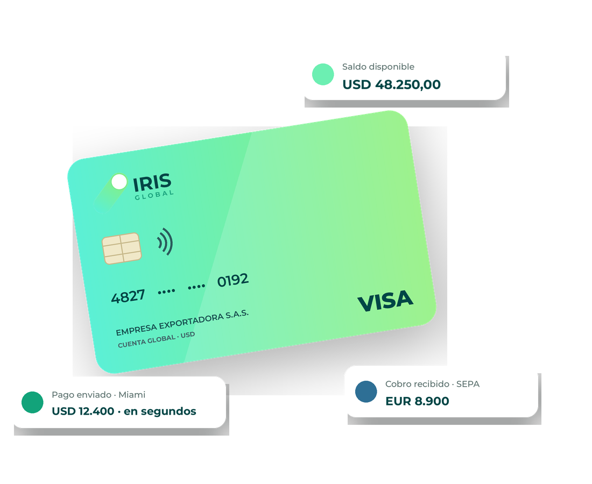

Plan de go-to-market · Iris Global · Noviembre 2026 · Confidencial
Iris Global: la nueva unidad de negocio de cuenta global de Iris
No es una propuesta de venta: la adquisición ya está acordada. Esta es la hoja de ruta para llevar al mercado, en el primer trimestre de 2027, una cuenta con la que la empresa colombiana cobra, guarda, paga y gasta en el mundo sin salir de Iris.
01 · Lo que ve el cliente
Tu empresa opera en el mundo desde una sola cuenta
Antes de hablar de infraestructura, el flujo que vive el usuario final: cobrar en cualquier divisa, guardar en dólares, pagar afuera en minutos y gastar con tarjeta. Todo con el respaldo de Iris y la velocidad de las stablecoins.

02 · La plataforma, en vivo
Esto ya existe: navéguenlo
La plataforma que opera la Cuenta Global está embebida aquí, en un entorno de demostración con datos de prueba. Lo que ven es lo que el cliente de Iris verá, con la marca de Iris encima. Debajo del marco, lo que hay detrás de cada pantalla.
03 · El cambio de alcance
Una nueva unidad de negocio, no un complemento
Iris no está añadiendo una función a la cuenta corporativa: abre una línea de ingresos propia, con tarjetas corporativas, APIs y tesorería multidivisa, con metas, equipo y resultados medibles por separado.
Cuenta corporativa Iris
- Saldos y operación en pesos
- Captación y rendimientos
- Pagos locales y Bre-B
- Crédito empresarial
Cuenta Global
- Cuenta multidivisa y tesorería en USD
- Pagos y cobros internacionales
- Tarjetas corporativas VISA
- Payroll internacional, APIs y ERP
- Módulos adicionales por sumar: factoring internacional y otros
Lo que Iris Global le suma al banco
Dólares en stablecoins
Saldos en USD respaldados en stablecoins, cerca de USD 27 M al año 3, sin captar ni prestar desde el balance del banco.
Ingreso transaccional
Spread cambiario, fees de pagos y cobros e interchange VISA, como Littio y Global66: sin riesgo de crédito.
Cross-selling
150+ clientes actuales suman productos sin costo de adquisición ni nuevo KYB.
APIs con IA y MCP
Iris queda lista para que empresas y agentes de IA operen con el banco vía APIs y MCP.
Retención
Con más productos por cliente, a la empresa le cuesta más irse a otro banco.
Posicionamiento
Iris se vuelve el banco de la empresa que opera afuera, frente a Bancolombia y las fintechs.
04 · Qué compró Iris
Estructura y estrategia: dos cosas distintas en una sola adquisición
Separar lo tangible de lo intangible aclara el valor. La estructura es lo que tardaría años en construirse; la estrategia es lo que no se compra en el mercado: equipo, conocimiento y tiempo.
SComponentes estructurales
- Plataforma y código · licencia de uso a perpetuidad, módulos, infraestructura como código, documentación y ambientes.
- Productos en operación · Local Pay, Iris Global FX, X Ramps, Account B2B, Wallet B2B2C y módulos de IA.
- Rieles conectados · ACH, Wire, FedWire, Pix, Bre-B y SEPA para cobrar y pagar en varios mercados.
- Licencia y regulación · sociedad con licencia MSB/VASP en el exterior.
- Partners contratados · proveedores de liquidez y OTC, custodia regulada (Fireblocks), emisor de tarjeta VISA, bancos corresponsales, KYB/AML.
EComponentes estratégicos
- Equipo · ingeniería, cumplimiento y operación, más fundadores en la transición.
- Conocimiento · 4 años de investigación y operación en LatAm; USD 600 M movilizados en 2025.
- Red de aliados · relaciones ya abiertas con emisores, mesas OTC y corresponsales.
- Costo de oportunidad · entrar al mercado en 3 meses en lugar de 24–36 construyendo o 6–12 licenciando.
- Modularidad · la plataforma admite unidades de negocio adicionales (factoring internacional, por ejemplo) sin rehacer la base.
Iris no capta ni presta: los dólares de los clientes viven en stablecoins bajo la entidad del exterior. Jurisdicción, licencia y partners finales se definen en el discovery.
05 · El mercado
La empresa colombiana ya mueve dinero afuera. Hoy lo hace caro y lento
Tres datos externos que dimensionan la oportunidad y explican por qué las fintechs de pagos están creciendo a múltiplos en Colombia.
Comercio exterior de Colombia entre enero y agosto de 2026: importaciones por USD 50.758 M (+17,2 %) y exportaciones por USD 36.881 M (+12,8 %). Cada dólar de esa cifra es un pago o un cobro internacional.
DANE, vía El Colombiano, 23 oct 2026
Crecimiento interanual de Global66 en Colombia: más de USD 125 M movidos en el primer trimestre de 2026 y su Cuenta Global Business creció 5×. Un tercio del volumen son cobros desde el exterior; destinos: España 35 %, EE. UU. 27 %, México 14 %, Brasil 9 %.
Portafolio, 17 may 2026
Costo total de un pago B2B por rieles tradicionales en el corredor México–EE. UU.; en Brasil supera con frecuencia el 5 %. Liquidación por corresponsales: 1–5 días hábiles; con stablecoins, menos de 24 horas. Estimación de un proveedor del sector.
Stabled, State of Cross-Border B2B Payments in LatAm 2026, mar 2026
06 · Dónde crecemos
Tres verticales, una plataforma
Cada vertical con su cliente, sus casos de uso, su modelo de ingreso y su meta a 36 meses. La estructura es modular: se pueden sumar unidades sin cambiar la base.
E-commerce y comercio digital
Tiendas y marcas que pagan pauta digital, cloud, proveedores, logística y recaudo internacional. Volumen, desde el segundo semestre.
Casos de uso
- Tarjeta para Meta Ads, Google Ads, cloud y software
- Pago de mercancía y dropshipping
- Bodegas y fulfillment en el exterior
- Links y botones de cobro multimoneda
- Transferencias a proveedores sin tarjeta
Cómo gana dinero Iris
| Fuente de ingreso | Tarifa |
|---|---|
| Interchange de tarjeta | 70 % para Iris |
| Manejo de tarjeta | USD 10 al mes |
| Link y botón de pago | 2 % del recaudo |
| Pago internacional sin tarjeta | 1 % del valor |
Tarifas: supuestos comerciales del Business Case IRIS Global. USD 200 de ingreso mensual promedio por cliente activo, sumando todas las fuentes y sin doble conteo.
Importadores y exportadores (COMEX)
Empresas que pagan importaciones y cobran exportaciones. Ticket alto, recurrencia mensual y venta consultiva desde el mes 1.
Casos de uso
- Pagos de importación a proveedores en EE. UU., China, Europa y la región
- Cobros de exportación con cuentas virtuales locales en el país del comprador
- Tesorería en USD para cubrir el ciclo entre pago y cobro
- Conciliación de operaciones con el ERP
Cómo gana dinero Iris
| Fuente de ingreso | Tarifa |
|---|---|
| Pagos de importación | 1 % del valor pagado |
| Cobros de exportación | 1 % del valor recibido |
| Diferencial cambiario | spread por operación |
Referente: Supra. USD 1.500 de ingreso mensual por cliente es hipótesis por validar por corredor y monto.
Tecnología, SaaS y servicios
Empresas que facturan en USD o EUR y pagan equipos remotos, licencias y cloud. Venta consultiva desde el mes 1.
Casos de uso
- Cobro de clientes en el exterior y conversión a pesos cuando conviene
- Payroll internacional a contratistas y equipos remotos
- Pago de licencias, cloud y herramientas con tarjeta
- APIs e integraciones con el ERP y agentes de IA vía MCP
Cómo gana dinero Iris
| Fuente de ingreso | Tarifa |
|---|---|
| Pagos y cobros internacionales | 1 % |
| Payroll internacional | por pago o por colaborador |
| APIs e integraciones | implementación y suscripción |
Referente: Global66 Empresas. USD 500 de ingreso mensual por cliente es hipótesis por validar.
Unidades adicionales
La plataforma y el modelo están diseñados para sumar líneas sin rehacer la base. El factoring internacional es la primera candidata; el discovery definirá orden y supuestos.
Qué aporta la base ya construida
- Clientes con KYB aprobado y cuentas virtuales activas
- Rieles y custodia ya conectados para desembolsar y cobrar
- Backoffice por roles con colas de cumplimiento y operación
- APIs para integrar con el core de Iris y con terceros
07 · La visión a 36 meses
3.550 empresas y USD 17,8 M de ingresos acumulados
Ingresos brutos, no EBITDA. E-commerce sigue el Business Case; COMEX y tecnología son hipótesis por validar con datos reales de Iris. Costos e inversión se definen en conjunto.
Ingresos por vertical · USD millones por año
empresas en la unidad al mes 36: 3.400 nuevas y 150 por cross-selling (meta indicativa, a depurar contra el CRM)
ingreso mensual al mes 36: e-commerce 600 K, COMEX 225 K y tecnología 150 K
ingreso anualizado de las tres verticales al cierre del mes 36
ingresos acumulados en 36 meses: e-commerce 10,8 M, COMEX 4,3 M y tecnología 2,7 M
| Ingresos (USD) | Año 1 | Año 2 | Año 3 | 36 meses | Clientes al cierre (A1 / A2 / A3) |
|---|---|---|---|---|---|
| E-commerce | 1,2 M | 3,6 M | 6,0 M | 10,8 M | 1.000 / 2.000 / 3.000 |
| COMEX | 0,5 M | 1,5 M | 2,3 M | 4,3 M | 60 / 105 / 150 |
| Tecnología / SaaS | 0,3 M | 0,9 M | 1,5 M | 2,7 M | 100 / 200 / 300 |
| Total | 2,0 M | 6,0 M | 9,8 M | 17,8 M | 1.160 / 2.305 / 3.450 + 100 cross-selling |
Fuente: Business Case IRIS Global, noviembre 2026. E-commerce: USD 200 por cliente activo al mes, rampa lineal 1.000 / 2.000 / 3.000. COMEX (USD 1.500) y tecnología (USD 500): hipótesis por validar.
08 · Go-to-market
Tres motores de adquisición, no visitas comerciales
El banco preguntó cómo se vende esta tecnología. La respuesta: cross-selling a la base, captación digital para volumen y venta consultiva para valor. El embudo digital se opera con pauta, contenido y automatización, no con fuerza de ventas en la calle.
Cross-selling a la base Iris
500+ empresas actuales. El cliente más rápido y barato de activar: ya pasó KYB y confía en Iris.
Captación digital e-commerce
Onboarding 100 % digital y oferta centrada en la tarjeta. Agregadores y marketplaces como multiplicadores por el volumen que mueven.
Venta consultiva COMEX y tech
Mayor volumen por cliente y pagos internacionales recurrentes.
Canales: propuesta a validar con Iris.
Los primeros 90 días
Transferir y conectar
- Entrega de código, accesos, IP y documentación
- Equipo clave incorporado a Iris
- Discovery: qué tiene Iris y qué necesitamos para conectarnos
- Continuidad para clientes actuales
Pilotear
- Piloto de Iris Global con clientes de la base
- Dispersión Bre-B desde la cuenta empresarial
- Pricing y onboarding validados
- Migración de clientes actuales a Iris Global
Lanzar
- Lanzamiento a la base empresarial de Iris
- Primeras ventas consultivas COMEX y tech
- Conciliación con IA en producción
- Tarjetas VISA según definición regulatoria
09 · Equipo
Roles que lideran el arranque
Estructura por funciones, no por nombres. Cada rol con un entregable claro y un lugar en el gobierno de la unidad.
Gerencia General Iris Global
Dueño del P&L de la unidad; reporta a la presidencia y conecta la unidad con el resto del banco.
Growth y Go-to-Market
Cross-selling a la base Iris, adquisición e-commerce, alianzas y venta consultiva COMEX y tech.
Tecnología
Integración con el core de Iris, arquitectura, seguridad y continuidad de la plataforma.
Producto
Roadmap de la Cuenta Global: onboarding self-service, tarjeta, FX y experiencia en la app Iris.
Cumplimiento y Riesgo
SARLAFT, KYC/KYB, relación con corresponsales y alineación regulatoria con la SFC.
Operaciones
Tesorería y liquidez multimoneda, conciliación, rieles de pago y soporte a clientes empresariales.
+1 Generación de demanda
Reporta a Growth y GTM: campañas, contenido y pipeline B2B.
+2 Desarrollo
Reportan a Tecnología: integraciones, APIs y MCP.
Gobierno
Sponsor en Iris, comité semanal y steering mensual.
10 · Empecemos
Decisiones para el kick-off
Tres decisiones desbloquean los 90 días. Lo demás se define en el discovery con datos reales de Iris.